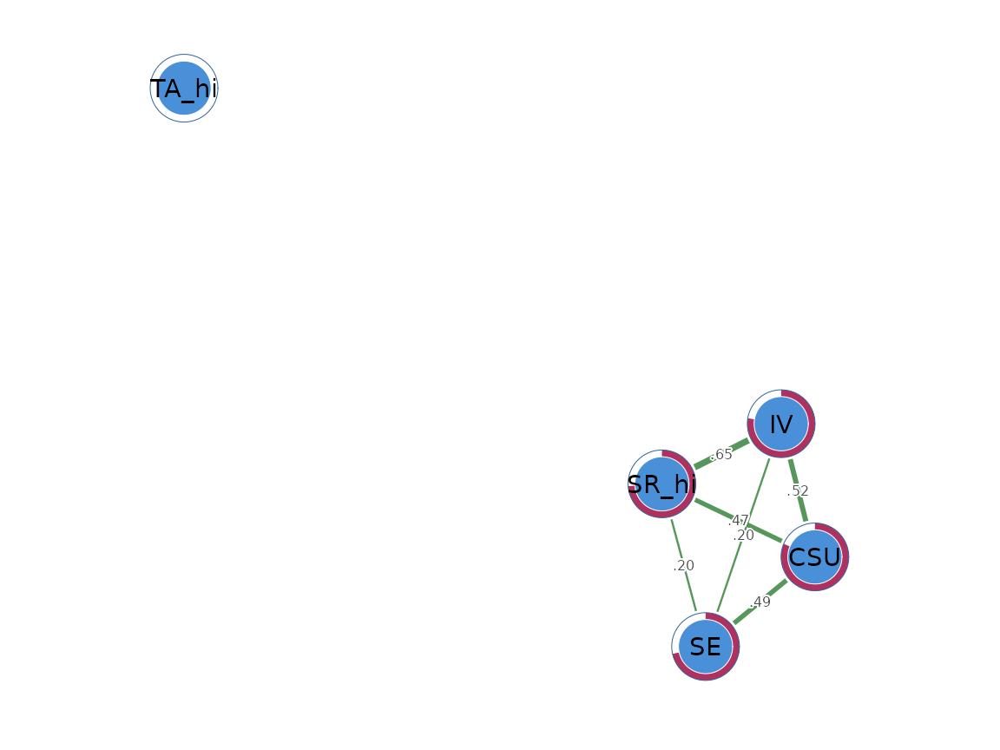

Mixed graphical models
Written by Mohammed Saqr and Sonsoles López-Pernas
Source:vignettes/mixed-graphical-models.Rmd
mixed-graphical-models.RmdStudies in psychology and education often measure variables of different types together: continuous scale scores such as motivation or self-efficacy alongside binary variables such as a diagnosis, a passed course or a reported behaviour. A Gaussian graphical model requires every variable to be continuous and an Ising model requires every variable to be binary, so neither can place both kinds in one network without transforming some of them. A mixed graphical model (Haslbeck & Waldorp, 2020) does. Each variable is regressed on all the others with a model suited to its type, linear for continuous and logistic for binary variables, and the regression coefficients form the edges. An edge is an association that remains with all other variables held constant; a missing edge means that the association is accounted for by the rest of the network.
This article estimates a mixed network of three continuous and two binary indicators of self-regulated learning, reads its edges, describes the nodes by centrality and by type-appropriate predictability, and examines how the rule that combines the two regressions of each pair changes the result.
Data
SRL_GPT holds 300 sets of responses to the Motivated
Strategies for Learning Questionnaire. The responses were generated by a
large language model (GPT) in a study of how such models answer
psychological surveys (Saqr, 2025); they serve as a well-structured
example and are not evidence about students. To obtain variables of both
types, two of the five construct scores are recoded as binary
indicators.
-
Continuous nodes:
CSU(cognitive strategy use),IV(intrinsic value) andSE(self-efficacy), construct scores on a scale from 1 to 7. -
Binary nodes:
SR_hi, 1 when self-regulation is at or above its median;TA_hi, 1 when test anxiety is at or above its median. - Observations: one row per respondent; the data are complete.
mixed_data <- transform(SRL_GPT,
SR_hi = as.integer(SR >= median(SR)),
TA_hi = as.integer(TA >= median(TA)),
SR = NULL, TA = NULL)
head(mixed_data)
#> CSU IV SE SR_hi TA_hi
#> 1 5.307692 5.666667 5.777778 0 1
#> 2 5.846154 6.444444 6.000000 1 1
#> 3 6.615385 6.666667 6.222222 1 0
#> 4 5.692308 6.555556 6.333333 1 1
#> 5 4.384615 5.555556 4.888889 0 1
#> 6 4.846154 5.444444 5.666667 0 0The recoding is for illustration. In an applied study a continuous variable is kept continuous unless its two states have a substantive meaning.
The model
A mixed graphical model is a pairwise Markov random field,
in which a zero pairwise term means that and are independent given all other variables. It is estimated one node at a time: for node , the coefficients minimize
where
is the Gaussian or binomial negative log-likelihood and the
penalty sets weak coefficients to zero. The penalty
is chosen for each node by the extended BIC
(
by default), and selected coefficients below a small threshold that
shrinks with the sample size are then set to zero
(threshold = "LW", as in mgm). Continuous variables are
standardized, so their units do not determine the coefficients. Each
pair then has two estimates, one from each regression. The AND rule
keeps the pair when both regressions select it, the OR rule when either
does, and the edge weight is the mean of the two estimates.
Node types are detected from the data: factor and character columns,
and numeric columns with at most 10 distinct integer values, are
categorical, and other numeric columns are Gaussian. Here the two 0/1
indicators are binary and the three scores Gaussian. When the integer
rule turns a numeric column into a categorical node, a warning names it;
the types argument overrides the detection.
Which variables are directly associated?
psychnet() with method = "mgm" estimates
the network with the AND rule.
mixed_net <- psychnet(data = mixed_data, method = "mgm")
summary(mixed_net)
#> <psychnet> mgm network
#> nodes: 5 edges: 6 (undirected)
#> optimality (KKT residual): 5.00e-11
#> edge weight: range [0.196, 0.632], mean 0.413
as.data.frame(mixed_net)
#> from to weight
#> 1 CSU IV 0.5179205
#> 2 CSU SE 0.4850679
#> 3 IV SE 0.1970362
#> 4 CSU SR_hi 0.4509658
#> 5 IV SR_hi 0.6323683
#> 6 SE SR_hi 0.1956633The network has 6 edges, all positive, with weights from 0.196 to 0.632. The strongest joins intrinsic value and high self-regulation (0.632): with the other variables held constant, respondents with higher intrinsic value are more likely to be in the upper half of self-regulation. Cognitive strategy use is joined to intrinsic value (0.518), self-efficacy (0.485) and high self-regulation (0.451). High test anxiety has no edge: under the AND rule, no pair involving it is selected by both of its regressions.
Edge weights are on different scales for continuous–continuous, continuous–binary and binary–binary pairs, so magnitudes are compared within a pair type. For a binary–binary edge, the sign of the logistic coefficient is kept; some software reports only its magnitude, because that sign depends on how the categories are coded.
Is the fitted network the optimum of its objective?
Each penalized regression is solved iteratively. Any solution must satisfy the problem’s optimality (Karush–Kuhn–Tucker) conditions; the amount by which a fitted network violates them, the largest over the nodewise regressions, is its certificate, and a value near zero shows that the network is the optimum of its objective.
certificate(mixed_net)
#> method certificate kind certified
#> 1 mgm 4.997067e-11 kkt TRUEThe violation is , so the edges are the solutions of the penalized regressions. The certificate concerns the computation, not the sampling stability of the edges or the measurement of the variables.
Which variables are most connected?
net_centralities() returns strength, the sum of absolute
edge weights, and expected influence, the signed sum.
net_centralities(mixed_net)
#> node strength expected_influence
#> 1 CSU 1.4539542 1.4539542
#> 2 IV 1.3473249 1.3473249
#> 3 SE 0.8777674 0.8777674
#> 4 SR_hi 1.2789974 1.2789974
#> 5 TA_hi 0.0000000 0.0000000Cognitive strategy use has the largest strength (1.454), followed by intrinsic value (1.347) and high self-regulation (1.279). All edges are positive, so expected influence equals strength, and high test anxiety has 0 on both. Because the edge scales differ by pair type, centrality compares the continuous and binary nodes only roughly.
How well is each variable predicted by the others?
Predictability uses a measure suited to each node type:
for continuous nodes, and for binary nodes the normalized classification
accuracy,
,
where
is the proportion classified correctly and
the proportion in the larger category (Haslbeck & Waldorp, 2018).
net_predict() needs the data to compute both.
net_predict(mixed_net, data = mixed_data)
#> node type metric predictability accuracy
#> 1 CSU gaussian R2 0.8131079 NA
#> 2 IV gaussian R2 0.7757368 NA
#> 3 SE gaussian R2 0.7153497 NA
#> 4 SR_hi binary nCC 0.7391304 0.88
#> 5 TA_hi binary nCC 0.0000000 0.50The other variables explain 81% of the variance in cognitive strategy use (), 78% in intrinsic value and 72% in self-efficacy. High self-regulation is classified correctly for 88% of the respondents, an nCC of 0.739 over its base rate. High test anxiety has nCC = 0 and 50% correct: with no edges, it is predicted no better than by its base rate. These are in-sample values.
Does the edge-combination rule change the network?
The two regressions of a pair can disagree. With
rule = "OR" a pair is kept when either regression selects
it.
mixed_or <- psychnet(data = mixed_data, method = "mgm", rule = "OR")
summary(mixed_or)
#> <psychnet> mgm network
#> nodes: 5 edges: 7 (undirected)
#> optimality (KKT residual): 5.00e-11
#> edge weight: range [-0.168, 0.632], mean 0.330
as.data.frame(mixed_or)
#> from to weight
#> 1 CSU IV 0.5179205
#> 2 CSU SE 0.4850679
#> 3 IV SE 0.1970362
#> 4 CSU SR_hi 0.4509658
#> 5 IV SR_hi 0.6323683
#> 6 SE SR_hi 0.1956633
#> 7 SR_hi TA_hi -0.1681336The OR network has 7 edges: the six AND edges with the same weights and a negative edge between high self-regulation and high test anxiety (-0.168). Respondents in the upper half of self-regulation are less likely to be in the upper half of test anxiety, with the continuous constructs held constant, but only one of the two regressions supports this association. It is the edge through which test anxiety connects to the network, and it is reported as dependent on the combination rule. The other six edges are selected under either rule.
What does the network look like?
cograph::splot() draws the network, with green positive
and red negative edges and a ring showing each node’s
predictability.
cograph::splot(mixed_net, psych_styling = TRUE, predictability = TRUE)
The figure shows four connected nodes and an isolated high test anxiety node with an empty predictability ring. Node positions come from a layout algorithm and carry no statistical meaning.
Reporting the analysis
A report identifies each node as continuous or binary, defines the binary coding, and states the sample size, , the combination rule and the treatment of missing data. Edge weights are reported numerically, and predictability with the measure matching each node type.
In this analysis, a mixed graphical model of three continuous and two binary nodes from 300 complete responses kept 6 positive edges under the AND rule, the largest between intrinsic value and high self-regulation (0.632), and left high test anxiety isolated. Under the OR rule a seventh, negative edge joined high self-regulation and high test anxiety (-0.168).
Assumptions and when to use a mixed graphical model
- The model is for data that combine continuous and binary variables. With continuous variables only, a Gaussian graphical model is simpler; with binary variables only, the Ising model.
- Continuous nodes are modelled by linear regression, binary nodes by logistic regression, and observations are independent of one another.
- Categorical variables with more than two levels require
native = FALSE, which fits a multinomial regression through the optionalglmnetpackage and keeps the variable as one node. One-hot coding is not an equivalent alternative, because it turns one variable into several nodes. - Edges selected only under the OR rule are less certain than those selected under both rules.
- Edges are conditional associations, not causal effects.
References
Haslbeck, J. M. B., & Waldorp, L. J. (2018). How well do network models predict observations? On the importance of predictability in network models. Behavior Research Methods, 50(2), 853-861. doi:10.3758/s13428-017-0910-x
Haslbeck, J. M. B., & Waldorp, L. J. (2020). mgm: Estimating time-varying mixed graphical models in high-dimensional data. Journal of Statistical Software, 93(8), 1-46. doi:10.18637/jss.v093.i08
Saqr, M. (2025). Delving into the psychology of machines: Exploring the structure of self-regulated learning via LLM-generated survey responses. Computers in Human Behavior, 173, 108769. doi:10.1016/j.chb.2025.108769